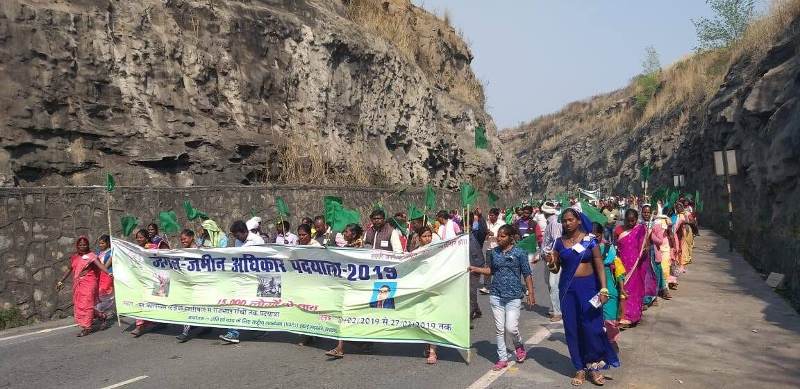
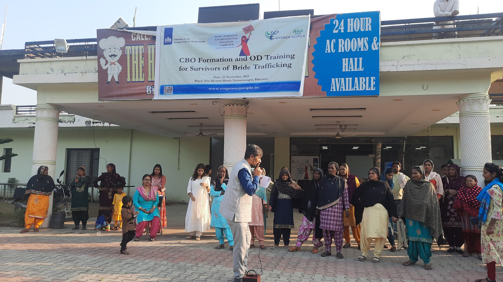

Explore
Two decades of grassroots advocacy

01 — Bio
Origin & philosophy
Raised in Bihar. Two decades addressing bride trafficking, gender imbalance and migration.

02 — Marches
Four marches, four causes
From a 300 km march against female feticide to a 4,600 km march across two states against bride trafficking.

03 — Organisation
Empower People
Grassroots work across Delhi, Haryana, Bihar and Assam since 1999.
04 — Teaching
Teaching
Connecting field experience with academic analysis for students and researchers.